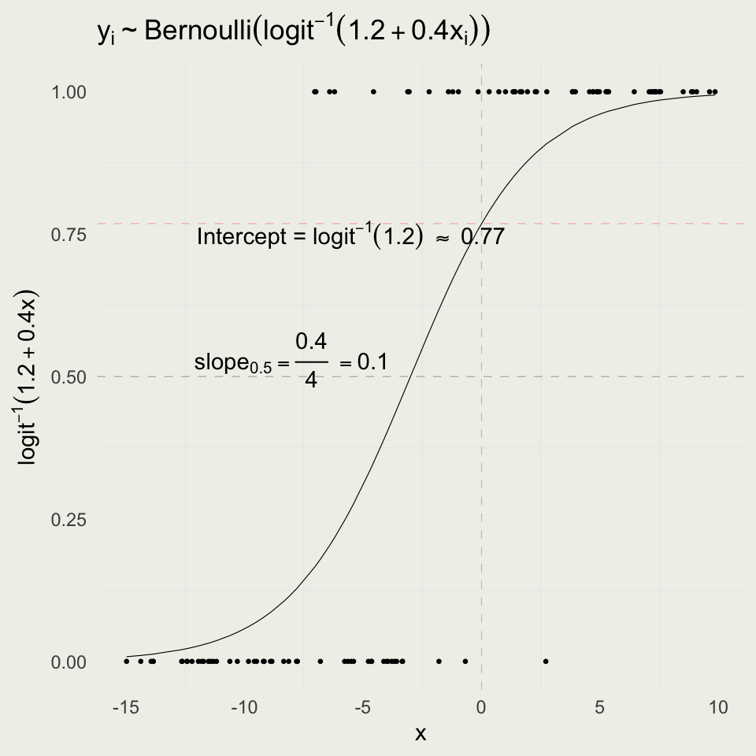
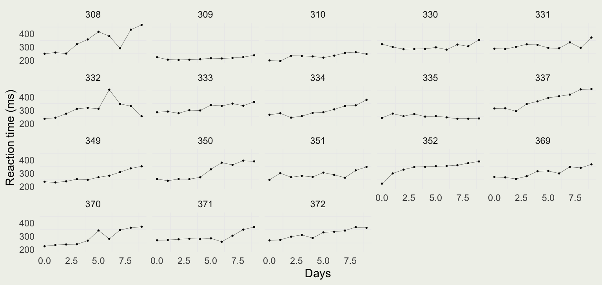
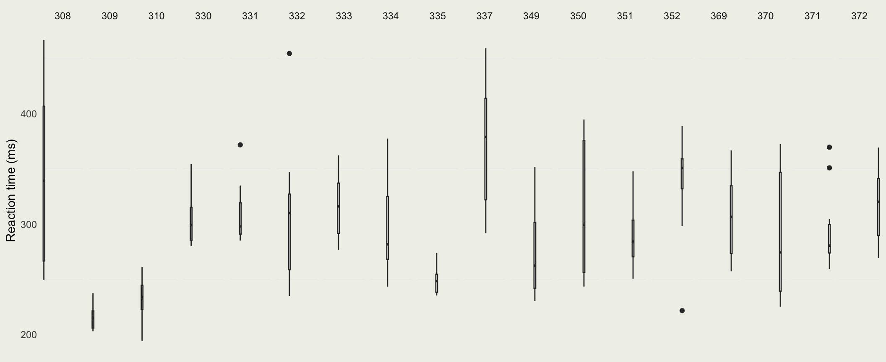
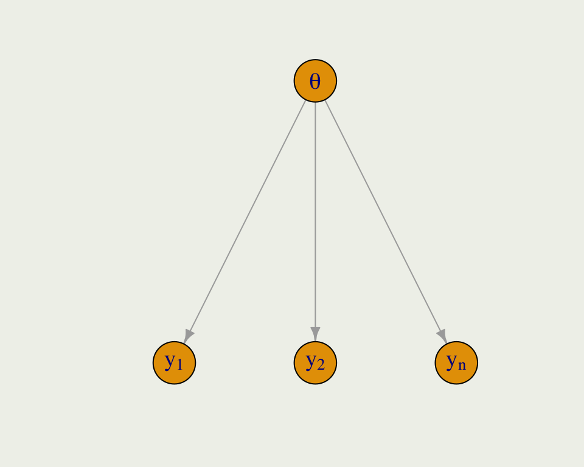
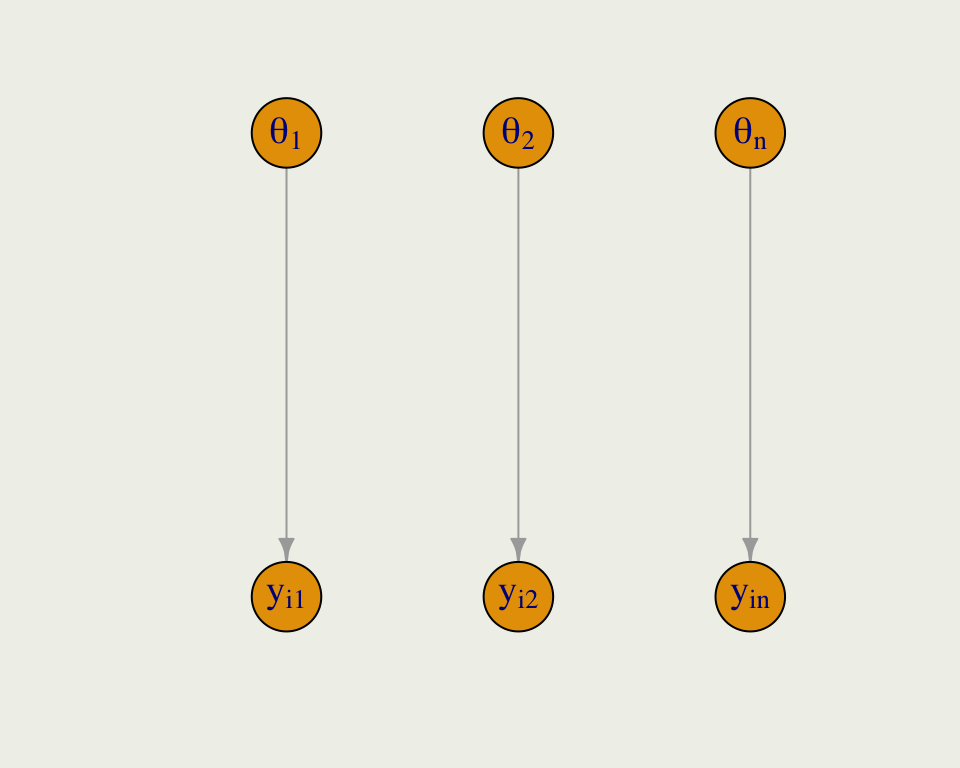
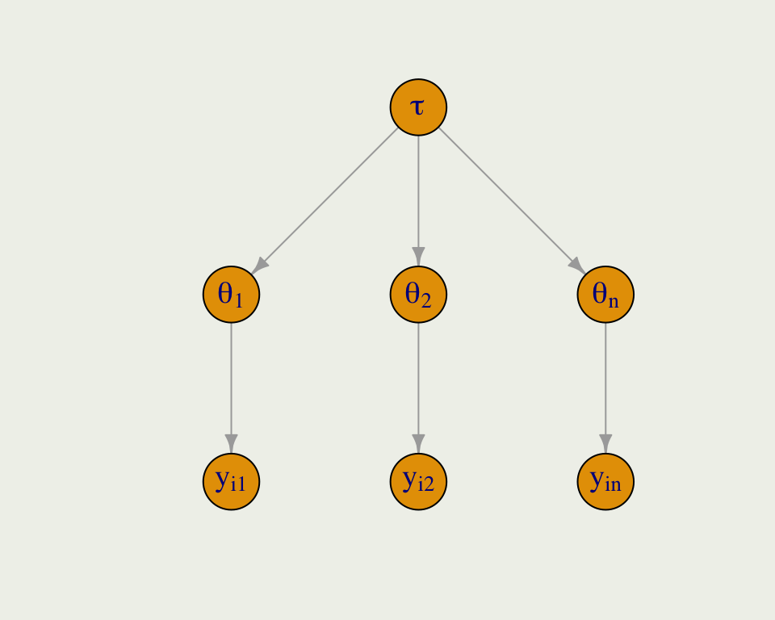

In Stan, the likelihood term can be written on a log scale as y ~ bernoulli_logit_glm(x, alpha, beta) or bernoulli_logit_glm_lupmf(y | x, alpha, beta)
Logistic Simulation
As before, we can forward simulate data for logistic regression
We will fit the data and try to recover the parameters
set.seed(123)logit <- qlogis; invlogit <- plogisn <-100a <-1.2b <-0.4x <-runif(n, -15, 10)eta <- a + x * bPr <-invlogit(eta)y <-rbinom(n, 1, Pr)sim <-tibble(y, x, Pr)p <-ggplot(aes(x, y), data = sim)p <- p +geom_point(size =0.5) +geom_line(aes(x, Pr), linewidth =0.2) +geom_vline(xintercept =0, color ="red", linewidth =0.2,linetype ="dashed", alpha =1/3) +geom_hline(yintercept =invlogit(a), color ="red", linewidth =0.2,linetype ="dashed", alpha =1/3) +geom_hline(yintercept =0.50, linewidth =0.2, linetype ="dashed", alpha =1/3) +ggtitle(TeX("$y_i \\sim Bernoulli(logit^{-1}(1.2 + 0.4x_i))$")) +annotate("text", x =-5.5, y =invlogit(a) -0.02,label =TeX("Intercept = $logit^{-1}(1.2)$ \\approx 0.77")) +annotate("text", x =-8, y =0.53,label =TeX("$slope_{.5} = \\frac{0.4}{4} = 0.10$")) +ylab(TeX("$logit^{-1}(1.2 + 0.4x)$")); print(p)

Interpreting Logistic Coefficients
The intercept is the log odds of an event when \(x = 0\), \(\text{logit}^{-1}(1.2) = 0.77\)
The slope changes depending on where you are on the curve
When you are near 0.50, the slope of the inverse logit function (logistic curve) is 1/4 and so you can divide your coefficient by 4 to get a rough estimate
This implies that if we go from \(x = -3\) to \(x = -2\), the probability will increase by about 0.10
Model Info:
function: stan_glm
family: binomial [logit]
formula: y ~ x
algorithm: sampling
sample: 2000 (posterior sample size)
priors: see help('prior_summary')
observations: 100
predictors: 2
Estimates:
mean sd 10% 50% 90%
(Intercept) 1.5 0.5 0.9 1.5 2.1
x 0.5 0.1 0.4 0.5 0.7
Fit Diagnostics:
mean sd 10% 50% 90%
mean_PPD 0.5 0.0 0.5 0.5 0.6
The mean_ppd is the sample average posterior predictive distribution of the outcome variable (for details see help('summary.stanreg')).
MCMC diagnostics
mcse Rhat n_eff
(Intercept) 0.0 1.0 1132
x 0.0 1.0 1106
mean_PPD 0.0 1.0 1584
log-posterior 0.0 1.0 817
For each parameter, mcse is Monte Carlo standard error, n_eff is a crude measure of effective sample size, and Rhat is the potential scale reduction factor on split chains (at convergence Rhat=1).
Generating Probability Data
To get a sense of the variability in probability we can simulate from the prior distribution on the probability scale
prior_pred_logit <-function(x) { a <-rnorm(1, mean =1.2, sd =0.5) b <-rnorm(1, mean =0.4, sd =0.1) Pr <-invlogit(a + b * x)return(Pr)}prior_pred <-replicate(50, prior_pred_logit(x)) |>as.data.frame()df_long <- prior_pred |>mutate(x = x) |>pivot_longer(cols =-x, names_to ="line", values_to ="y")p <-ggplot(aes(x, y), data = df_long)p +geom_line(aes(group = line), linewidth =0.2, alpha =1/5) +geom_line(aes(y = Pr), data = sim, linewidth =0.5, color ='red') +ylab(TeX("$logit^{-1}(\\alpha + \\beta x)$")) +ggtitle(TeX("Simulating from prior $logit^{-1}(\\alpha + \\beta x_i))$"),subtitle =TeX("$\\alpha \\sim Normal(1.2, 0.5)$ and $\\beta \\sim Normal(0.4, 0.1)$"))
One person tells three personal statements, one of which is a lie.
Others discuss and guess which statement is the lie, and they jointly construct a numerical statement of their certainty in the guess (on a 0–10 scale).
The storyteller reveals which was the lie.
Enter the certainty number and the outcome (success or failure) and submit in the Google form. Rotate through everyone in your group so that each person plays the storyteller role once.
Two Truths and a Lie
https://tinyurl.com/two-truths-and
What do you think the range of certainty scores will look like: will there be any 0’s or 10’s? Will there be a positive relation between x and y: are guesses with higher certainty be more accurate, on average? How strong will the relation be between x and y: what will the curve look like? Give approximate numerical values for the intercept and slope coefficients corresponding to their sketched curves.
Example: Diabetes
This example comes from US National Institute of Diabetes and Digestive and Kidney Diseases from a population of women who were at least 21 years old, of Pima Indian heritage, and living near Phoenix, Arizona
It is available as part of the R package pdp
The outcome \(diabetes\), is an indicator of the disease
Some other variables are:
pregnant
glucose
pressure
triceps
insulin
mass
pedigree
age
diabetes
6
148
72
35
NA
33.6
0.627
50
pos
1
85
66
29
NA
26.6
0.351
31
neg
8
183
64
NA
NA
23.3
0.672
32
pos
1
89
66
23
94
28.1
0.167
21
neg
0
137
40
35
168
43.1
2.288
33
pos
5
116
74
NA
NA
25.6
0.201
30
neg
Missing Value Imputation
This dataset contains missing values
People typically either delete them or replace them with average values, or something like that
None of these are good approaches
In R, we recommend a combination of the mice package and brms, which works nicely with mice
From a Bayesian perspective, a missing value is just another unknown parameter in the model, which can be modeled
Following is an example of a simple missing value estimation from the Stan manual
data {int<lower=0> N_obs;int<lower=0> N_mis;array[N_obs] real y_obs;}parameters {real mu;real<lower=0> sigma;array[N_mis] real y_mis;}model { y_obs ~ normal(mu, sigma); y_mis ~ normal(mu, sigma);}
Notice, that you need to make an assumption about the model for missing values
The prior on the intercept corresponds to the log odds of developing diabetes when a person has an average BMI, which is about 29 in the US (which is considered high-risk)
It is likely that the probability is between 20% and 80%, and so a weakly informative prior can be expressed as \(\text{Normal}(0, 0.5)\), since invlogit(c(-1.5, 1.5)) = [0.18, 0.82]
Suppose, we also put a weakly informative \(\text{Normal}(0, 1)\) prior on \(\beta\)
Model Info:
function: stan_glm
family: binomial [logit]
formula: diab ~ bmi
algorithm: sampling
sample: 2000 (posterior sample size)
priors: see help('prior_summary')
observations: 752
predictors: 2
Estimates:
mean sd 10% 50% 90%
(Intercept) -0.6 0.1 -0.7 -0.6 -0.5
bmi 0.9 0.1 0.8 0.9 1.1
Fit Diagnostics:
mean sd 10% 50% 90%
mean_PPD 0.4 0.0 0.3 0.4 0.4
The mean_ppd is the sample average posterior predictive distribution of the outcome variable (for details see help('summary.stanreg')).
MCMC diagnostics
mcse Rhat n_eff
(Intercept) 0.0 1.0 1315
bmi 0.0 1.0 1299
mean_PPD 0.0 1.0 1651
log-posterior 0.0 1.0 780
For each parameter, mcse is Monte Carlo standard error, n_eff is a crude measure of effective sample size, and Rhat is the potential scale reduction factor on split chains (at convergence Rhat=1).
Example: Diabetes
There are no sampling problems, but we should still check the diagnostics
Let’s look at a classic dataset called sleepstudy from lme4 package
These data are from the study described in Belenky et al. (2003), for the most sleep-deprived group (3 hours time-in-bed) and for the first 10 days of the study, up to the recovery period
p <-ggplot(aes(Days, Reaction), data = lme4::sleepstudy)p +geom_point(size =0.3) +geom_line(linewidth =0.1) +facet_wrap(vars(Subject)) +ylab("Reaction time (ms)")

Sleep Data
To get a better sense of the differences in per-Subject reaction time distributions, we can plot them side by side

Pooling
Pooling has to do with how much regularization we induce on parameter estimates in each cluster; sometimes this is called shrinkage
Complete pooling ignores the clusters and estimates a global parameter
Even though reaction time \(y_i\), belongs to subject \(j\), we ignore the groups and index all the \(y\)s together

Pooling
Complete pooling is the opposite of no pooling, where we estimate a separate model for each group
Here, we have \(n\) subjects, and \(y_{ij}\) refers to the \(i\)th reaction time in subject \(j\)

Partial Pooling
Partial pooling is the compromise between the two extremes
Like any other parameter in a Bayesian model, the global hyperparameter \(\tau\) is given a prior and is learned from the data
There could be multiple levels of nesting, say students within schools, within states, etc.

Partial Pooling Compromise
Posterior \(f(\theta \mid y)\) is a compromise between prior \(f(\theta)\) and likelihood \(f(y \mid \theta)\)
In the same spirit, the pooled parameter \(\theta_j\) (say reaction time for subject \(j\)) is a compromise between within-subject parameters, and among-subject parameters
\(\overline y_j\) is no-pool estimate of average reaction time for subject \(j\), and \(\overline y_{\tau}\) is complete-pool estimate
\(n_j\) is the number of observations for subject \(j\), \(\sigma_{y}^2\) is within subject variance of reaction times, and \(\sigma_{\tau}^2\) is the between-subject variance
Sleep Data
Let’s build three models for the sleep data, starting with complete pooling, which is what we have been doing all along
We will start with the intercept-only model
These data contain the same number of observations per Subject, which is unusual, so we will make it more realistic by removing 30% of the measurements
Model Info:
function: stan_glm
family: gaussian [identity]
formula: Reaction ~ 1
algorithm: sampling
sample: 10000 (posterior sample size)
priors: see help('prior_summary')
observations: 125
predictors: 1
Estimates:
mean sd 10% 50% 90%
(Intercept) 294.5 4.2 289.2 294.5 299.9
sigma 52.9 3.4 48.7 52.7 57.3
Fit Diagnostics:
mean sd 10% 50% 90%
mean_PPD 294.4 6.3 286.4 294.4 302.5
The mean_ppd is the sample average posterior predictive distribution of the outcome variable (for details see help('summary.stanreg')).
MCMC diagnostics
mcse Rhat n_eff
(Intercept) 0.1 1.0 6347
sigma 0.0 1.0 6890
mean_PPD 0.1 1.0 8264
log-posterior 0.0 1.0 4152
For each parameter, mcse is Monte Carlo standard error, n_eff is a crude measure of effective sample size, and Rhat is the potential scale reduction factor on split chains (at convergence Rhat=1).
Sleep Data
We can compare the predictions from the complete-pooling model to the reaction times of each subject
Next, we will fit a no-pool model, which means we are fitting 18 separate models, one for each subject
You can fit them separately, by making 18 calls to stan_glm, or you can do in all at once
Since we will not run 18 separate regressions, it will be simpler to estimate one global variance parameter \(\sigma\), which means there is some variance pooling
This will not affect the inferences for \(\mu_j\) which is our main focus here